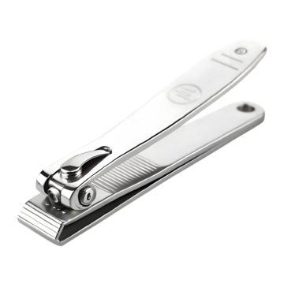
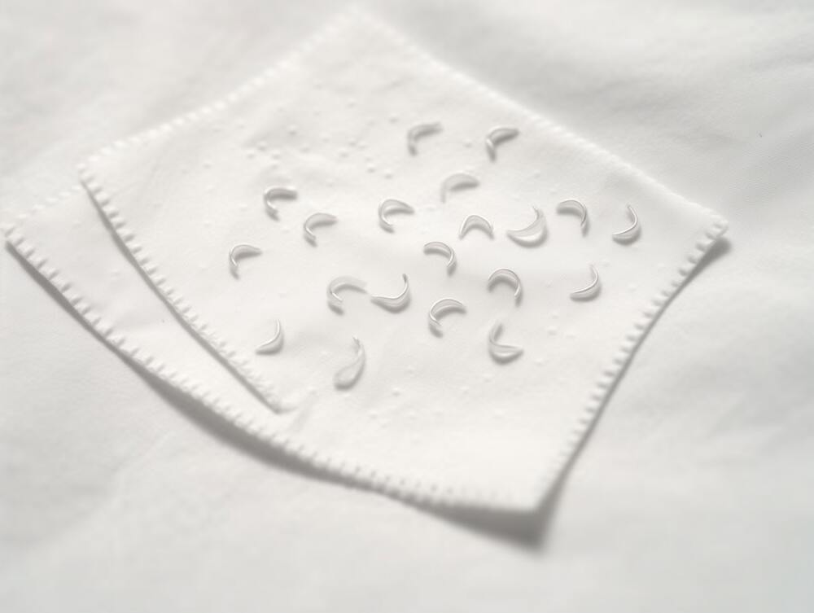
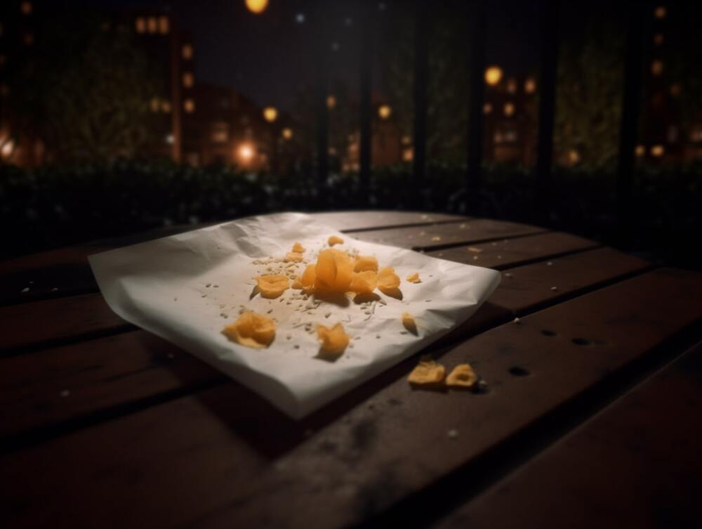

톡
톡

톡

1. 손톱 깎기
톡. 톡. 어느새 조금 자란 손톱이 키보드와 맞물려 거슬리는 소리를 낸다. 손톱을 좀 깎자. 오른손부터 왼손까지 깎는데 생각보다 양이 조금 모자라 엄지 발톱까지 깎았다. 곧 이걸 먹을 쥐의 비위가 걱정되긴 하지만 뭐 어떤가.
2. 트랩 만들기
티슈 한 장을 뽑아 잘라둔 손톱을 고이 모아 둔다. 이런 수상한 짓은 낮보다 밤에 해야 성공 가능성이 높아보이니 저녁 9시쯤 진행한다.
3. 트랩 설치
저녁 9시, 가끔 쥐가 보이던 아파트 공원 벤치 밑에 조심히 내려 놓는다. 혹시 몰라 손톱 주변으로 냉장고에 먹다 남은 치즈 부스러기도 조금 준비해 뿌려놨다. 이제 기다림 밖에 남지 않았다.
4. 쥐에게 먹이기
20분 경과, 쥐가 보이지 않는다. 1시간 10분 경과, 미동도 없다. 3시간, 점점 엉덩이가 아파오고 눈도 감긴다. 깜빡 존 것 같기도 하고? 그로부터 20분 경과, 졸았다. 확실히 졸았다. 황급히 손톱을 확인했는데 교묘하게 치즈 부스러기만 없어지고 모아놓은 손톱은 정갈히 남아있다.